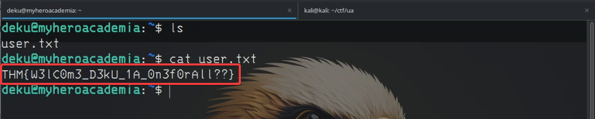

Task 2 - Initial Access
Now that we've gained initial access to the system, it's time to explore what we can use to escalate our privileges.
The first thing we usually do after landing on a machine is check what kind of access we have and what files or directories we can interact with.
In this case, our permissions were limited, so we couldn’t do much initially.
After some digging, I found something interesting inside the /assets/images directory. There were two image files, but since they weren’t on our local machine, we needed to transfer them from the remote system to investigate further.
To do that, we’ll set up a Netcat listener—similar to before, but with a slight twist:
Use the following command to set up a listener on your local machine to receive the image file:

Then, use this command on the remote machine to transfer the image:
Once the file is on your local machine, you can inspect the images to check for hidden data or corruption. Upon examining the OneForAll image,
we noticed that although it had a .jpg extension, its metadata indicated the file was broken. So we needed to fix it.
This guide shows how to repair the corrupted image using hexedit by restoring its magic number—the signature bytes that identify the file format.
What is a magic number?
- A magic number is a unique sequence of bytes at the beginning of a file that identifies its format.
- For example, JPEG files start with FF D8 FF, while PNG files start with 89 50 4E 47.
- These help software recognize and handle different file types correctly.
To fix the image, open it in hexedit:
hexedit oneforall.jpg
Navigate to the beginning of the file and change the first three bytes to FF D8 FF. Save the file.

After saving, you can open the image with a viewer or inspect its metadatausing the file command.
Now that the image is restored, we can see a hidden message. To extract it, we’ll use a tool called steghide.
Run the following command:
steghide extract -sf oneforall.jpg
You'll be prompted for a passphrase, but we don’t have one yet—so we need to dig deeper.
After further exploration, we found a hidden directory: /var/www/Hidden_Content. Inside, there was a file named passphrase.txt.
Using cat, we viewed its contents. It revealed a Base64-encoded string:
QWxsbWlnaHRGb3JFdmVyISEhCg==
To decode it, run:
echo "QWxsbWlnaHRGb3JFdmVyISEhCg==" | base64 -d
Decoded passphrase:
Now we can extract the hidden message using:
steghide extract -sf oneforall.jpg -p AllMightForEver!!!
After entering the passphrase, the hidden message is successfully extracted—revealing our next clue.
Inside the extracted data, we found a file named creds.txt. Opening it revealed our first major breakthrough: a username and password combo:
deku:One?For?All_!!one1/A
Using these credentials, we can now log in as Deku via SSH and retrieve our first flag.

User Flag
THM{W3lC0m3_D3kU_1A_0n3f0rAll??}